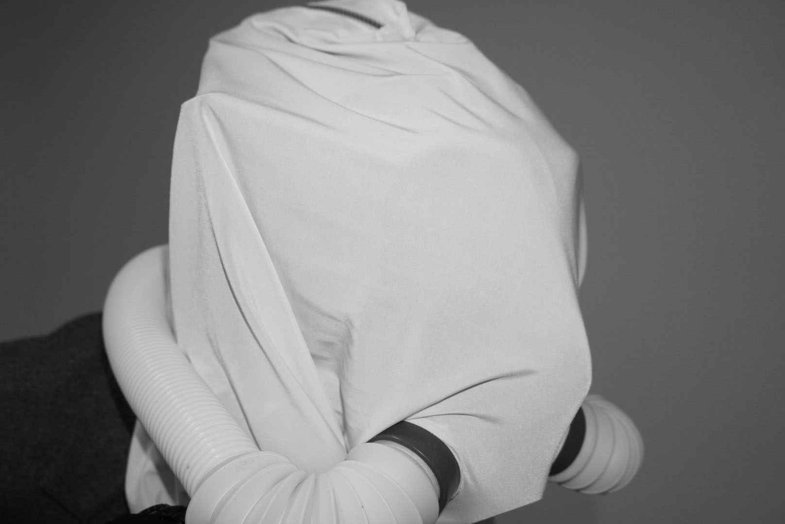

Anxiety Masquerade is a study of aesthetic of anxiety.I would like to focus on what the aesthetics are through the garments that discuss and pacify the anxiety excessive technology use. The sculptural elements that I am designing draw from various breathing techniques used in coping with anxiety. I have designed this series of aesthetic study that I look at embodying anxiety as placebo effects. I used masks and tubes to make collage of iconographic of anxiety as objects.
An additional idea was the meaning of excessive technology use is that about technology addiction. Technology addiction has become distraction addiction. Like most addiction, the relentless pull to the point of compulsion, it creates a “compulsive loop”. Like lab rats or drug addicts, we need more to achieve the same effect. Heavy breathing represents a symptom of this excessive technology use. It is a physiological expression of the anxiety resulting from an unmet need. The fear and discomfort that come with the struggle to breath urge us to feed our addiction.